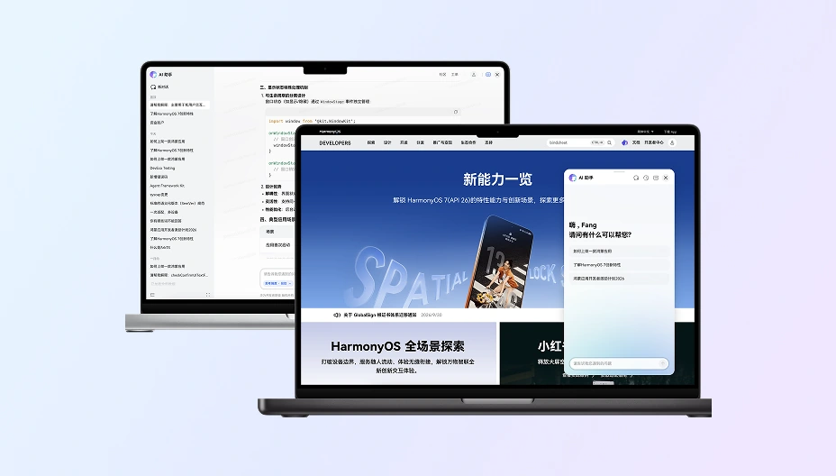
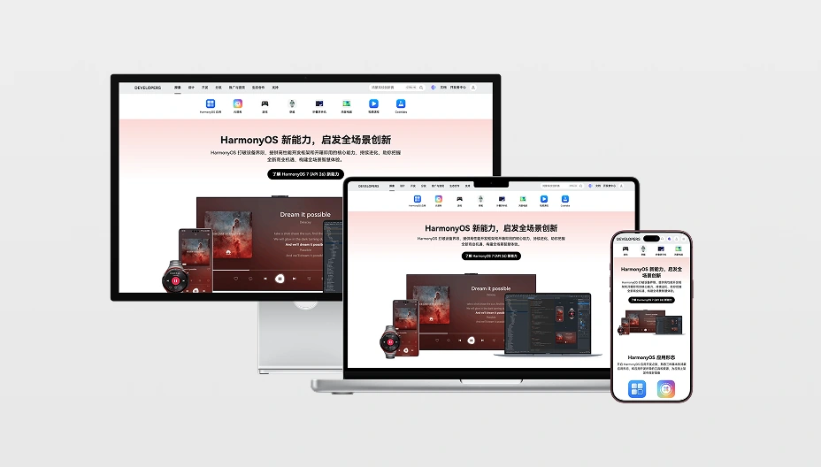
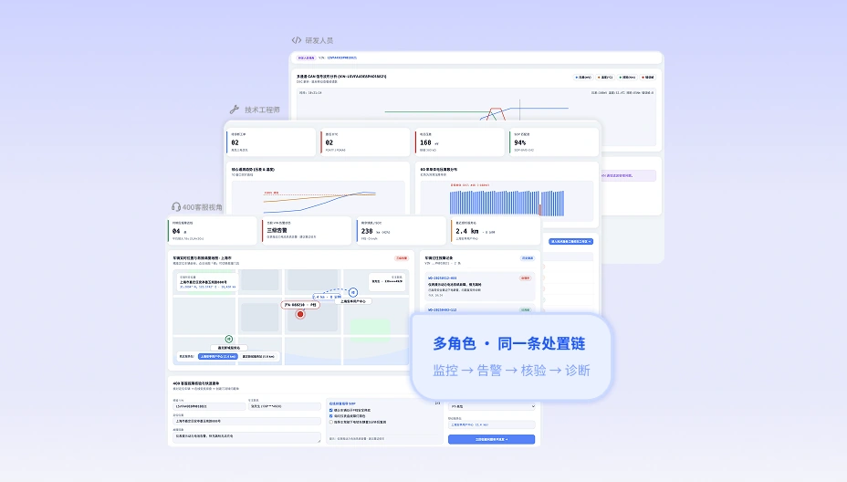

开发者平台
AI智能服务体系
围绕开发者当前任务，设计 AI 的入口、形态、上下文与状态机制。
- 项目难点
- 跨场景获取帮助，仍需保留上下文与控制权。
- 我的动作
- 负责 1.0 全量交互设计，沉淀三阶交互形态 + 五项体验机制。
- 交付状态
- 1.0 已上线；2.0 已汇报未开发；3.0 方向共创。
Open to UX / AI Product opportunities
UX · AI UX Designer
9年用户体验设计经验，聚焦 AI 产品体验、开发者产品与复杂系统。
从业务与技术约束出发，设计清晰的任务路径、交互机制与系统规则。
代表项目 开发者官网 AI 助手 1.0 已上线，负责全量交互设计。
01 / Selected work
三个案例，呈现我如何从真实任务出发，完成 AI 交互、复杂平台与开发者体验设计。

围绕开发者当前任务，设计 AI 的入口、形态、上下文与状态机制。

从信息架构到跨模块服务，连接开发者的内容查找、学习与求助路径。

通过现场研究，将初版单一用户定义重构为三类协作角色。
02 / Method & evidence
从真实任务中识别问题，把判断落实为交互与系统规则。
从单点功能设计走向体验架构，
让复杂系统形成清晰、可信、可持续的产品体验。
03 / Work experience
通过方案评审、研发协同和上线验收推进交付。
围绕开发者平台与复杂业务系统，负责用户研究、信息架构与交互设计，通过需求澄清、方案评审、研发协同和上线验收推进交付。
参与平台从知识付费向在线教育的升级，围绕业务变化梳理信息架构与使用流程，完成页面布局与体验改版。独立负责电商购物车的交互逻辑与产品设计，并支持渠道及运营活动设计。
负责智能穿搭、海淘、衣橱租借及电商产品的 App 与小程序设计。参与用户研究与业务流程梳理，独立完成原型和高保真设计，跟进功能实现并维护设计文档与规范。
04 / Experience framework
以任务为线索，连接平台、开发者产品与 AI 服务中的设计经验。
意图、上下文、可信内容与人机协作。
多角色、权限、数据管理与长链路任务。
官网、文档、搜索、社区与服务入口。
05 / Career intent
希望在更完整的产品环境中，从机会识别、产品定位到体验架构与长期演进，参与把 AI 做成真正的产品能力。
AI 行业应用
产品方向定义
AI 平台型产品